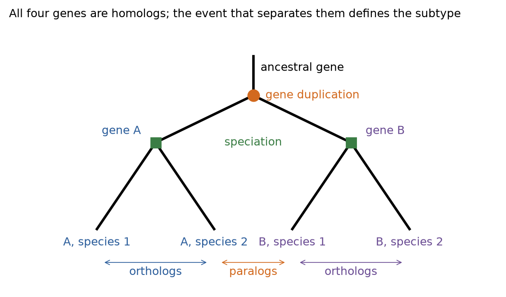
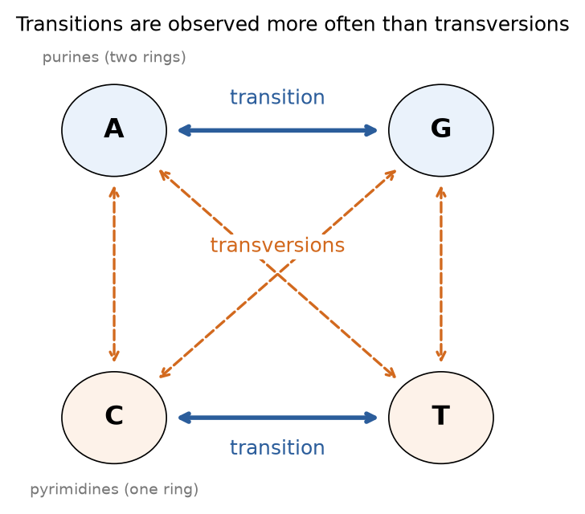
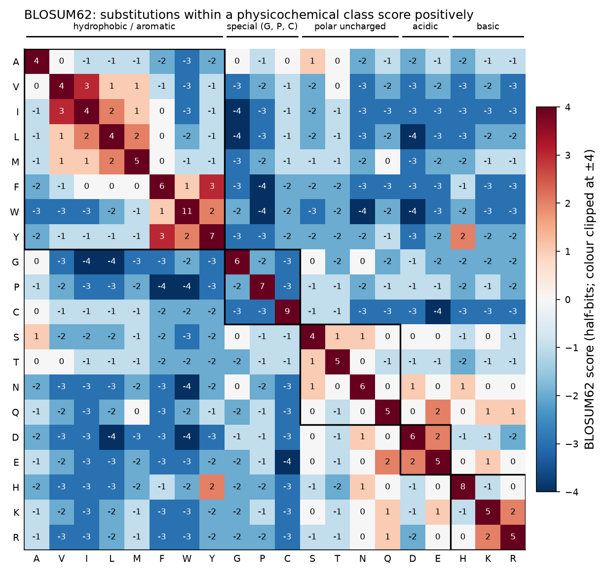
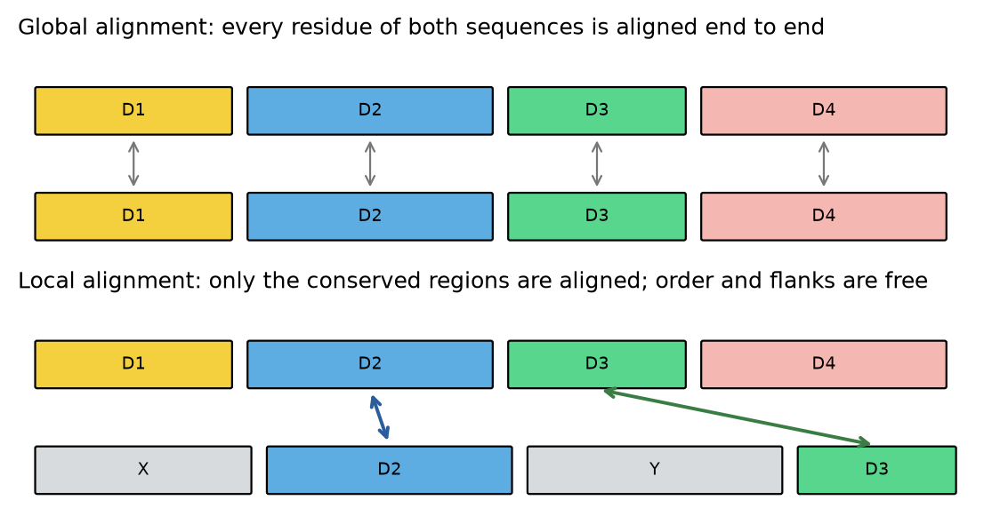
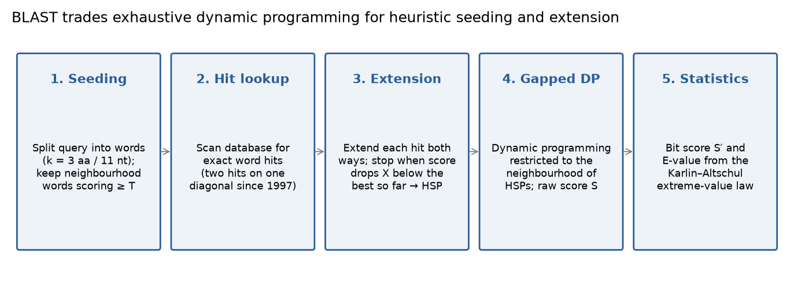
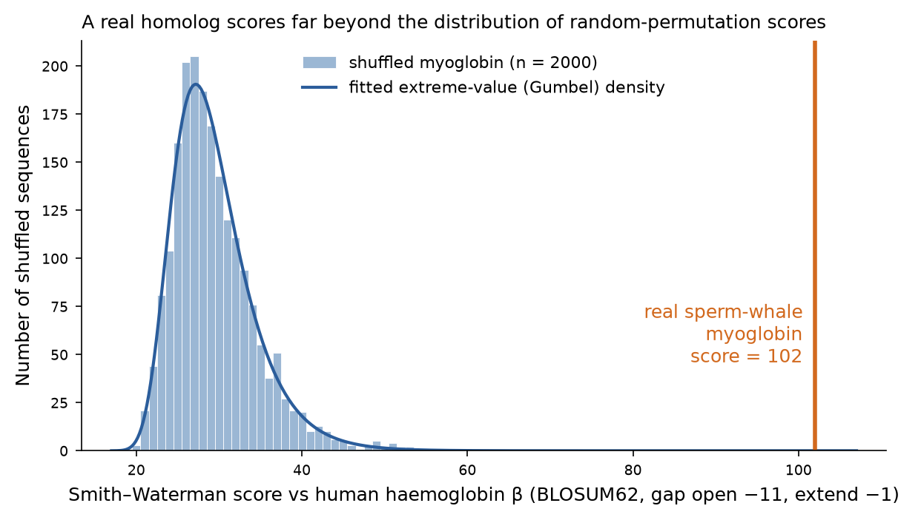
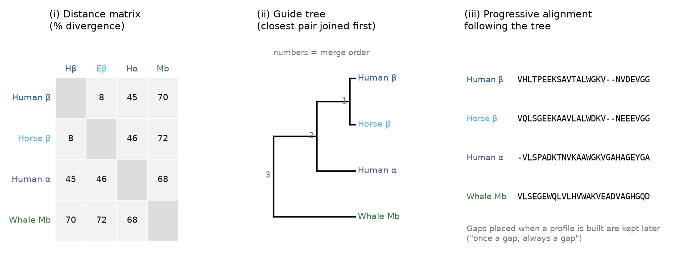

Este documento amplía el contenido de la primera clase del módulo. Las diapositivas son un mapa; este texto es el territorio. Está escrito para ser leído de forma lineal una vez y luego consultado por secciones. Cada algoritmo se acompaña de un ejemplo numérico completamente resuelto que ustedes pueden reproducir a mano, cada afirmación sobre la biología o la estadística lleva una cita a la literatura primaria, y cada sección termina con una breve lista de puntos que deberían ser capaces de explicar sin apuntes.
Objetivos de aprendizaje
- Definir homología, ortología y paralogía, y explicar por qué el "porcentaje de similitud" es evidencia a favor de la homología, pero no equivale a ella.
- Describir los procesos mutacionales (sustituciones, inserciones, deleciones) que un alineamiento intenta reconstruir.
- Explicar cómo se derivan las matrices de sustitución (PAM, BLOSUM) como puntuaciones log-odds, y elegir una matriz y un esquema de gaps apropiados para un problema dado.
- Completar una matriz de programación dinámica y realizar su trazado inverso (traceback) para los algoritmos de Needleman–Wunsch (global) y Smith–Waterman (local).
- Describir la heurística de BLAST (siembra de palabras, extensión, HSP) e interpretar las puntuaciones brutas, los bit scores y los E-values en términos de la estadística de Karlin–Altschul.
- Explicar cómo se construye una PSSM y por qué PSI-BLAST detecta homólogos remotos que BLASTp no encuentra.
- Describir el alineamiento múltiple de secuencias progresivo y sus limitaciones conocidas.
- Conectar el alineamiento de secuencias con las tareas posteriores de este módulo: selección de plantillas (templates) para el modelado por homología, MSA para la predicción de estructura y análisis de conservación para la identificación de sitios de unión.
Sección 1¿Por qué alinear secuencias?
El alineamiento de secuencias (sequence alignment) es la operación sobre la que descansa casi todo lo demás en bioinformática. Una secuencia de nucleótidos o aminoácidos, considerada por sí sola, es una cadena de caracteres sin significado; adquiere significado solo cuando se compara con otras secuencias cuyas propiedades ya se conocen. La comparación se realiza mediante un alineamiento: una disposición de dos o más secuencias que sitúa, una sobre otra, los caracteres que se infiere que descienden de la misma posición ancestral.
La razón por la que esto funciona es evolutiva. Las secuencias relacionadas lo están porque fueron copiadas, con errores, a partir de un ancestro común; los errores se acumulan lentamente en comparación con la velocidad a la que se pierde la función, de modo que una proteína que todavía cumple la función ancestral tiende a conservar la secuencia ancestral en las posiciones que importan. Por lo tanto, el alineamiento nos permite transferir información —función, estructura, la ubicación de un residuo catalítico, una mutación asociada a enfermedad— desde una secuencia caracterizada a una no caracterizada. Las principales aplicaciones se resumen a continuación.[13]
| Aplicación | Qué se compara | Qué se infiere |
|---|---|---|
| Anotación funcional de una proteína nueva | Proteína consulta contra una base de datos de proteínas caracterizadas (UniProtKB/Swiss-Prot) | Función molecular probable, pertenencia a una familia, residuos catalíticos o de unión conservados |
| Búsqueda de genes | ADN genómico contra transcritos conocidos, proteínas o regiones conservadas de otros genomas | Ubicación de exones, regiones codificantes y elementos regulatorios |
| Relaciones evolutivas | Genes o proteínas homólogos entre organismos | Árboles filogenéticos; identificación de ortólogos y parálogos |
| Análisis de familias y superfamilias | Alineamientos múltiples de secuencias de muchos parientes | Motivos y dominios conservados, perfiles específicos de posición, nuevos miembros de la familia |
| Interpretación de variantes | Secuencia del paciente contra el genoma o la proteína de referencia | Ubicación de mutaciones; si un residuo afectado está conservado y, por lo tanto, probablemente es relevante |
| Diseño experimental | Secuencias de partidores candidatos contra el genoma | Especificidad de los partidores (Primer-BLAST); contaminación con vectores (VecScreen) |
| Bioinformática estructural | Proteína objetivo contra proteínas de estructura 3D conocida (PDB) | Plantillas para el modelado por homología; MSA utilizados por métodos del tipo AlphaFold; conservación de residuos mapeada sobre una estructura |
Puente con el resto del módulo
La última fila de la tabla es la que conecta esta unidad con las clases que siguen. La clase de predicción de estructura de proteínas comienza buscando en el Protein Data Bank una plantilla (template) con BLAST y luego alineando la secuencia objetivo con ella; la calidad de ese alineamiento determina la calidad del modelo más que cualquier otro factor. Las clases de docking y de diseño de fármacos usan alineamientos múltiples para decidir qué residuos de un bolsillo de unión están conservados entre especies o dentro de una familia de proteínas y, por lo tanto, qué interacciones debe satisfacer un ligando. La clase de dinámica molecular parte de modelos cuya numeración de secuencia se concilia con la proteína experimental mediante un alineamiento. Todo error posterior atribuible a un mal alineamiento es barato de evitar aquí y costoso de corregir después.
Sección 2Fundamentos evolutivos
2.1 Homología, ortología y paralogía
Dos secuencias son homólogas si descienden de una secuencia ancestral común. La homología es una afirmación sobre la historia y, por lo tanto, es binaria: dos genes comparten un ancestro o no lo comparten. Expresiones como "70 % homólogas" son incorrectas; la magnitud que puede medirse y expresarse como porcentaje es la identidad o la similitud, que son propiedades de un alineamiento (Sección 2.2).[13],[14]
Walter Fitch introdujo en 1970 la distinción que todavía se usa para clasificar a los homólogos según el evento evolutivo que los separó.[14]
- Los ortólogos son homólogos en especies diferentes que divergieron por un evento de especiación. La hemoglobina β humana y la hemoglobina β de caballo son ortólogas. Los ortólogos habitualmente, aunque no siempre, conservan la función ancestral, razón por la cual la ortología es la base preferida para transferir anotación funcional entre organismos.
- Los parálogos son homólogos que divergieron por un evento de duplicación génica. Pueden residir en el mismo genoma (hemoglobina α y hemoglobina β humanas) o, tras una especiación posterior, en genomas diferentes. Tras la duplicación, una copia queda liberada de la presión selectiva y puede adquirir una nueva función (neofuncionalización), repartir la función ancestral con su copia compañera (subfuncionalización) o degenerar en un pseudogén.
- Los xenólogos son homólogos cuya historia incluye transferencia génica horizontal; son comunes en bacterias y relevantes, por ejemplo, para la diseminación de genes de resistencia a antibióticos.

Conviene tener presente el ejemplo de la hemoglobina durante el resto de la unidad: la familia de las globinas (cadenas α y β de la hemoglobina, mioglobina, leghemoglobinas vegetales) desciende de una única proteína ancestral de unión a oxígeno, sus miembros comparten el mismo plegamiento tridimensional y, sin embargo, algunos pares conservan menos de 20 % de identidad de secuencia. Es el caso canónico en que la comparación de secuencias por sí sola tiene dificultades, mientras que la comparación estructural tiene éxito, y volveremos a él en las Secciones 8 y 9.
2.2 La similitud es evidencia de homología, no la homología en sí
Las diapositivas de la clase ilustran el concepto de homología con la extremidad pentadáctila: el ala de un murciélago, la aleta de un delfín y la mano humana comparten el mismo plan esquelético porque lo heredaron de un ancestro tetrápodo común, aunque hoy sirvan para volar, nadar y asir. Los anatomistas comparativos llegaron a esta conclusión a partir de la correspondencia estructural, y el análisis de secuencias razona de la misma manera: observamos similitud e inferimos homología cuando la similitud es demasiado grande para haber surgido por azar.
Deben mantenerse separados tres términos:
- Identidad: el porcentaje de posiciones alineadas en las que los dos residuos son iguales.
- Similitud: el porcentaje de posiciones alineadas en las que los residuos son iguales o tienen una puntuación de sustitución positiva (p. ej., isoleucina alineada con leucina). La similitud es siempre al menos tan grande como la identidad y depende de la matriz utilizada.
- Homología: la inferencia de ascendencia común. Está justificada cuando la puntuación del alineamiento es estadísticamente significativa (Sección 7.3), y se refuerza con una estructura compartida, una función compartida y una ubicación filogenética coherente.
Lo inverso también importa. Las secuencias pueden ser similares sin ser homólogas —segmentos cortos de baja complejidad, hélices transmembrana ricas en leucina o superhélices (coiled coils) generan similitud por azar— y las secuencias homólogas pueden ser disímiles cuando han divergido durante el tiempo suficiente. La revisión de Pearson sobre búsquedas por similitud es el tratamiento breve más claro de estas distinciones y de los umbrales prácticos que se derivan de ellas.[13]
2.3 Cómo divergen las secuencias
Un alineamiento es una hipótesis sobre los eventos mutacionales que transformaron una secuencia ancestral en las secuencias que observamos hoy. Se representan explícitamente tres clases de eventos.
| Evento | Efecto sobre el ADN | Representación en el alineamiento | Ejemplo |
|---|---|---|---|
| Sustitución (mutación puntual) | Un nucleótido es reemplazado por otro | Un desapareamiento (mismatch) entre dos caracteres alineados | ATA → ATG |
| Inserción | Se agregan uno o más nucleótidos | Un gap ("–") en la secuencia que carece del material | AA → AGA |
| Deleción | Se eliminan uno o más nucleótidos | Un gap en la secuencia que perdió el material | ACTG → AC–G |
Como un alineamiento de a pares no puede determinar si un gap refleja una inserción en un linaje o una deleción en el otro, ambos se agrupan bajo el término indel. Solo un grupo externo (outgroup) —una tercera secuencia que divergió antes— puede polarizar el evento, lo que es una de las razones por las que los alineamientos múltiples contienen más información que los de a pares.
A nivel de proteína, la consecuencia de una sustitución nucleotídica depende del código genético. Una sustitución sinónima cambia el codón, pero no el aminoácido codificado (UUA → UUG, ambos leucina); es en gran medida invisible para la selección sobre la proteína y se acumula aproximadamente a la tasa neutral. Una sustitución no sinónima cambia el aminoácido (UUA → UUC, leucina → fenilalanina) o crea un codón de término (UGG → UGA, triptófano → término, una mutación sin sentido que trunca la proteína). Los cambios no sinónimos son filtrados por la selección: las sustituciones entre residuos fisicoquímicamente similares (leucina ↔ isoleucina, aspartato ↔ glutamato) se toleran con mucha mayor frecuencia que las radicales (triptófano ↔ glicina). Las matrices de sustitución de la Sección 4 son, en esencia, tablas cuantitativas de esta tolerancia.
De la química se derivan dos consecuencias para la comparación a nivel de nucleótidos. Las purinas (A, G) son bases de dos anillos y las pirimidinas (C, T) son bases de un anillo; una sustitución que conserva la clase de anillo es una transición (A↔G, C↔T) y una que la cambia es una transversión. Aunque hay el doble de transversiones posibles que de transiciones, en la mayoría de los genomas las transiciones se observan aproximadamente con el doble de frecuencia, en parte porque se generan más fácilmente por los errores comunes de desaminación y tautomerización y son toleradas más fácilmente por la estructura de la doble hélice (Figura 3, Sección 4.1). Por último, en el ADN codificante de proteínas las tres posiciones del codón evolucionan a tasas diferentes: las terceras posiciones, donde ocurre la mayoría de los cambios sinónimos, son las más rápidas, y por eso los alineamientos de proteínas son más sensibles que los de ADN para detectar relaciones distantes.
Puntos clave — Sección 2
- La homología es binaria e histórica; la identidad y la similitud se miden sobre un alineamiento.
- Los ortólogos están separados por especiación y los parálogos por duplicación; los ortólogos son la base más segura para la transferencia funcional.
- Los alineamientos modelan las sustituciones como desapareamientos y los indels como gaps; los datos de a pares no pueden distinguir una inserción de una deleción.
- El código genético y la fisicoquímica hacen que algunas sustituciones sean mucho más frecuentes que otras; esto es lo que codifican las matrices de puntuación.
Sección 3Qué es un alineamiento
Formalmente, un alineamiento de dos secuencias s y t se obtiene insertando caracteres de gap ("–") en cualquiera de las secuencias, de modo que las dos cadenas resultantes tengan la misma longitud y ninguna columna contenga dos gaps. Cada columna es entonces una de tres cosas: una coincidencia (match; caracteres idénticos), un desapareamiento (mismatch; caracteres diferentes) o un indel (un carácter emparejado con un gap). El ejemplo de las diapositivas para las secuencias de juguete s = VIVALASVEGAS y t = VIVADAVIS es una de esas disposiciones:
Las barras verticales marcan identidades (7 de 12 columnas); las columnas restantes son dos desapareamientos (L/D, E/I) y tres gaps. La pregunta planteada en la clase —¿cuál de dos alineamientos es mejor?— no tiene respuesta hasta que decidamos cómo puntuar las columnas. Un alineamiento con más identidades no es automáticamente mejor si las logra abriendo muchos gaps, porque cada gap postula un evento mutacional adicional. La Sección 4 desarrolla el sistema de puntuación; las Secciones 5 y 6 muestran luego cómo encontrar la disposición que maximiza la puntuación.
Hay otras dos magnitudes que se informan de manera rutinaria y que serán necesarias para interpretar la salida de BLAST. La cobertura (coverage) es la fracción de la secuencia consulta que participa en el alineamiento; un alineamiento con 98 % de identidad que cubre 20 residuos de una proteína de 500 residuos nos dice algo sobre un motivo compartido, no sobre las proteínas en su totalidad. La longitud del alineamiento es el número de columnas, incluidos los gaps, y es el denominador que se usa convencionalmente para el porcentaje de identidad, aunque distintos programas toman decisiones diferentes (identidad sobre la secuencia más corta, sobre la longitud del alineamiento o solo sobre las columnas alineadas), por lo que siempre debe verificarse la convención antes de comparar dos números.
Una nota sobre la afirmación de la diapositiva de que el alineamiento global ha sido "descartado"
Es cierto que, para la búsqueda en bases de datos, el alineamiento global fue reemplazado por métodos locales, porque un dominio de la secuencia consulta rara vez corresponde a la longitud completa de cada entrada de la base de datos. Sin embargo, el alineamiento global sigue siendo el método de elección siempre que se sabe que dos secuencias son homólogas a lo largo de toda su longitud: al comparar proteínas ortólogas, al alinear una secuencia objetivo con su plantilla para el modelado por homología, al calcular el porcentaje de identidad de una familia y —como operación central dentro de todo programa de alineamiento múltiple progresivo— al alinear perfiles con perfiles. Consideren ambos enfoques como herramientas para preguntas diferentes, más que como lo antiguo y lo nuevo.
Sección 4Sistemas de puntuación
Un sistema de puntuación asigna un número a cada columna de un alineamiento; la puntuación del alineamiento es la suma sobre las columnas. Por lo tanto, tiene dos componentes: una puntuación de sustitución σ(a, b) para cada par de residuos y una penalización por gap para las columnas que contienen un gap.
4.1 Puntuación de nucleótidos
El esquema más simple utilizado en la clase es el esquema unitario o de edición: σ(a,a) = +1, σ(a,b) = −1 para a ≠ b, y −1 por cada posición de gap. Es adecuado para enseñar los algoritmos y para secuencias muy similares, y bajo este esquema la puntuación máxima está relacionada con la distancia de edición (el número mínimo de sustituciones e indels que convierte una cadena en la otra). Para datos reales se prefiere una matriz de 4 × 4 porque, como se discutió en la Sección 2.3, las transiciones son más frecuentes que las transversiones y, por lo tanto, deberían penalizarse menos. La clase utiliza la siguiente matriz ilustrativa:
| A | G | C | T | |
|---|---|---|---|---|
| A | 10 | −1 | −3 | −4 |
| G | −1 | 7 | −5 | −3 |
| C | −3 | −5 | 9 | 0 |
| T | −4 | −3 | 0 | 8 |
Observen la estructura: las dos transiciones, A/G (−1) y C/T (0), puntúan más alto que las cuatro transversiones (−3 a −5). Las matrices por defecto de BLASTn (coincidencia +2, desapareamiento −3) y de megaBLAST (coincidencia +1, desapareamiento −2) son más simples; están ajustadas, respectivamente, a secuencias de aproximadamente 85–90 % y >95 % de identidad, lo que es una de las razones por las que importa la elección del programa.

4.2 Matrices de sustitución log-odds para proteínas
Con veinte aminoácidos de tamaño, carga e hidrofobicidad muy diferentes, una matriz para proteínas no puede escribirse a partir de primeros principios; debe estimarse a partir de alineamientos de proteínas que ya se sabe que están relacionadas. Las dos familias de matrices de uso común son matrices log-odds, lo que significa que cada entrada compara dos hipótesis acerca de una columna que contiene los residuos i y j:
Una puntuación positiva significa que el par se observa en homólogos con más frecuencia de lo que predice el azar; una puntuación negativa significa que se observa con menos frecuencia. Una puntuación de cero corresponde a un par no informativo. El logaritmo hace que las puntuaciones sean aditivas, de modo que sumar sobre las columnas de un alineamiento entrega el cociente log-odds del alineamiento completo: la puntuación del alineamiento es el logaritmo de cuánto más probable es el alineamiento bajo homología que bajo azar. El análisis de Altschul mostró que toda matriz de puntuación razonable es implícitamente una matriz log-odds para algún conjunto de frecuencias objetivo, de modo que la verdadera pregunta no es si usar log-odds, sino qué frecuencias objetivo —qué distancia evolutiva— debe representar la matriz.[32],[6] Cuando λ se elige como ln 2, las puntuaciones están en bits; BLOSUM62 está tabulada en medios bits (λ = ln 2 / 2) y redondeada a enteros.
4.3 Matrices PAM (Dayhoff, 1978)
Margaret Dayhoff y colaboradores construyeron las primeras matrices de sustitución sistemáticas a partir de 71 familias de proteínas estrechamente relacionadas (≥ 85 % de identidad), en las que el alineamiento era inequívoco y cada diferencia podía atribuirse razonablemente a una única mutación aceptada.[4] El procedimiento, resumido en las diapositivas, es el siguiente.
- Dentro de cada familia, reconstruir un árbol filogenético y contar cada intercambio de aminoácidos i → j a lo largo de sus ramas. Estas son las mutaciones puntuales aceptadas (accepted point mutations): sustituciones que pasaron por la selección natural.
- Normalizar los conteos por la mutabilidad de cada residuo (con qué frecuencia cambia en absoluto) y por su frecuencia, para obtener una matriz de probabilidades de sustitución Mij para una distancia evolutiva de 1 PAM, definida como la cantidad de cambio en la que el 1 % de las posiciones ha experimentado una mutación aceptada.
- Extrapolar a distancias mayores mediante multiplicación de matrices: M(n) = (M(1))n. PAM250 corresponde a 250 mutaciones aceptadas por cada 100 residuos; como muchas posiciones mutan más de una vez y algunas revierten, esto deja aproximadamente un 20 % de posiciones idénticas.
- Convertir cada matriz de probabilidades en puntuaciones log-odds dividiendo por las frecuencias de fondo y tomando el logaritmo.
Por lo tanto, el modelo PAM supone que la evolución es un proceso de Markov con las mismas probabilidades de sustitución en cada posición y en todo momento, y que los intercambios observados entre proteínas casi idénticas pueden extrapolarse a proteínas distantes. Ambos supuestos son aproximaciones: las posiciones conservadas del sitio activo y las posiciones de superficie evolucionan a tasas muy diferentes, y las sustituciones que se aceptan entre proteínas con 85 % de identidad no son las mismas que se toleran tras cientos de millones de años. La convención de numeración sigue a la extrapolación: un número PAM mayor significa una distancia evolutiva mayor (PAM30 para secuencias muy similares, PAM250 para secuencias distantes).
4.4 Matrices BLOSUM (Henikoff & Henikoff, 1992)
Steven y Jorja Henikoff adoptaron el enfoque opuesto: en lugar de extrapolar a partir de parientes cercanos, medir las sustituciones directamente en el tipo de alineamiento que se desea puntuar: bloques conservados y sin gaps provenientes de alineamientos de proteínas lejanamente relacionadas (la base de datos BLOCKS, con ~2,000 bloques de ~500 familias en ese momento).[5]
- En cada columna de cada bloque, contar todos los pares de residuos (i, j). Una columna con los residuos A, A, A, S aporta tres pares A–A y tres pares A–S.
- Para evitar que grandes grupos de secuencias casi idénticas dominen los conteos, agrupar (clustering) las secuencias de cada bloque con un umbral de identidad elegido y tratar cada grupo como una única secuencia ponderada. El umbral le da su número a la matriz: para BLOSUM62, se fusionaron las secuencias con más de 62 % de identidad.
- Calcular las frecuencias objetivo pij y las frecuencias de fondo qi a partir de los conteos ponderados; convertir a log-odds en medios bits (la fórmula de la Sección 4.2).
Como agrupar con una identidad menor fusiona más secuencias y deja solo los pares más divergentes para ser contados, la numeración va en la dirección opuesta a la de PAM: un número BLOSUM menor corresponde a una distancia evolutiva mayor (BLOSUM80 para parientes cercanos, BLOSUM45 para parientes remotos). BLOSUM62 es la matriz por defecto de BLASTp y de la mayoría de las herramientas de alineamiento de proteínas porque tuvo el mejor desempeño en las evaluaciones comparativas originales en un amplio rango de distancias. Una curiosa nota histórica es que la BLOSUM62 que efectivamente se distribuye y se usa en todas partes difiere levemente de la que produce el algoritmo publicado, debido a un error de programación en el cálculo original; la matriz "equivocada" resulta tener un desempeño marginalmente mejor en las búsquedas de homología, lo que recuerda que la construcción de matrices es tan empírica como teórica.[6],[7]

substitution_matrices.load("BLOSUM62")). Las puntuaciones positivas (rojo) se concentran dentro de los grupos enmarcados —residuos hidrofóbicos alifáticos/aromáticos, los residuos polares pequeños, el par ácido D/E y el par básico K/R— y la mayoría de las sustituciones entre grupos son negativas. La diagonal no es uniforme: los residuos poco frecuentes, como W (+11) y C (+9), puntúan más alto cuando coinciden que los comunes, como A (+4) o L (+4), porque es menos probable que una coincidencia entre residuos poco frecuentes ocurra por azar. El color está truncado en ±4 para facilitar la lectura; el valor impreso es exacto.4.5 Elección de una matriz
La diapositiva que resume las "diferencias entre PAM y BLOSUM" condensa varias ideas y merece una ampliación. Las dos familias difieren en cómo fueron construidas, no en lo que representan: ambas son matrices log-odds, ambas tienen diagonales positivas y elementos fuera de la diagonal mayoritariamente negativos, y ambas existen en series que abarcan desde relaciones cercanas hasta distantes. Las afirmaciones útiles en la práctica son las siguientes.
| PAM | BLOSUM | |
|---|---|---|
| Datos | 71 familias de proteínas con ≥85 % de identidad (1978) | Bloques conservados sin gaps de ~500 familias de proteínas divergentes (1992) |
| Modelo | Modelo evolutivo explícito; matrices distantes extrapoladas mediante multiplicación de matrices | Sin extrapolación; cada matriz se mide directamente a partir de bloques agrupados en su umbral de identidad |
| Numeración | Distancia evolutiva en mutaciones aceptadas por cada 100 residuos: mayor = más distante | Umbral de identidad de agrupamiento: menor = más distante |
| Correspondencia aproximada | PAM120 ≈ BLOSUM80 · PAM160 ≈ BLOSUM62 · PAM250 ≈ BLOSUM45 | |
| Uso típico actual | Secuencias cortas o muy similares (PAM30, PAM70 para secuencias consulta cortas en BLAST); ajuste de modelos filogenéticos | Alineamiento de proteínas y búsqueda en bases de datos de propósito general (BLOSUM62 por defecto; BLOSUM45 para homólogos remotos; BLOSUM80 para parientes cercanos) |
De esto se desprenden dos reglas prácticas. Primero, usen la matriz que corresponda a la relación que esperan: una matriz ajustada para 20 % de identidad recompensará en exceso las sustituciones conservadoras entre secuencias con 90 % de identidad, y una matriz ajustada para 90 % de identidad no logrará reconocer que la isoleucina y la valina son casi intercambiables en un homólogo remoto. Segundo, cuando una búsqueda falla con BLOSUM62, repítanla con BLOSUM45 y una penalización de apertura de gap más baja antes de concluir que no existe ningún homólogo; y cuando tiene éxito con cientos de hits casi idénticos, BLOSUM80 o PAM30 afinarán el ordenamiento entre ellos.
4.6 Penalizaciones por gap
Un gap de longitud k representa un indel de k residuos. Con una penalización lineal, cada posición de gap cuesta la misma cantidad, d, de modo que un gap de longitud k cuesta k·d. Esto es simple, pero biológicamente inapropiado: una única inserción de cinco residuos es un único evento mutacional y es mucho más probable que cinco inserciones independientes de un solo residuo; sin embargo, un esquema lineal cobra lo mismo por ambas. La solución estándar es la penalización afín (affine), introducida en la programación dinámica por Gotoh:[3]
Con penalizaciones afines, el algoritmo prefiere un gap largo a varios cortos, que es lo que sugiere la biología. Los valores de o y e no son independientes de la matriz: una matriz en medios bits requiere penalizaciones mayores que una en bits, y el NCBI publica, para cada matriz, los pares de penalizaciones de gap para los cuales se han estimado los parámetros de Karlin–Altschul (Sección 7.3). Son comunes dos refinamientos adicionales. Las penalizaciones por gaps terminales (end gaps) a menudo se omiten en el alineamiento semiglobal, que es el modo adecuado para alinear un fragmento con una secuencia de longitud completa o una secuencia objetivo con una plantilla más larga. Las penalizaciones por gap específicas de posición, que hacen que los gaps sean más baratos en los loops que en los elementos de estructura secundaria, son utilizadas por ClustalW y por la mayoría de los alineadores que consideran la estructura (Sección 8).
4.7 Ejemplo resuelto: puntuación de un alineamiento dado
La clase pide calcular la puntuación del siguiente alineamiento con la matriz de 4 × 4 de la Sección 4.1 y una penalización lineal por gap de −5 por cada posición de gap.
| s | A | G | A | C | T | A | G | T | T | A | C |
|---|---|---|---|---|---|---|---|---|---|---|---|
| t | C | G | A | - | - | - | G | A | C | G | T |
| σ | -3 | +7 | +10 | -5 | -5 | -5 | +7 | -4 | +0 | -1 | +0 |
Sumando las puntuaciones de las columnas: (−3) + 7 + 10 + (−5) + (−5) + (−5) + 7 + (−4) + 0 + (−1) + 0 = 1. Las tres posiciones de gap cuestan −15 y consumen todo el beneficio de las tres identidades; con un esquema afín con o = 5, e = 1, el mismo gap costaría −7 y el alineamiento puntuaría 9. Esto ilustra por qué el esquema de gaps se informa junto con la puntuación —una puntuación bruta carece de sentido sin él— y motiva el bit score normalizado de la Sección 7.3.
Puntos clave — Sección 4
- Las puntuaciones de sustitución son cocientes log-odds: positivas cuando un par está sobrerrepresentado en homólogos, negativas cuando está subrepresentado; sumarlas sobre un alineamiento entrega el log-odds del alineamiento.
- PAM extrapola a partir de parientes cercanos (número mayor = más distante); BLOSUM mide bloques directamente (número menor = más distante). PAM160 ≈ BLOSUM62.
- Las penalizaciones afines por gap (apertura + extensión) modelan un indel largo como un solo evento; el esquema por defecto de BLASTp es BLOSUM62 con 11/1.
- Una puntuación bruta solo es interpretable junto con la matriz y el esquema de gaps utilizados.
Sección 5Alineamiento global: el algoritmo de Needleman–Wunsch
5.1 Por qué la enumeración es imposible
Dado un sistema de puntuación, el mejor alineamiento es simplemente el que tiene la puntuación más alta. El enfoque ingenuo —enumerar todos los alineamientos y quedarse con el mejor— fracasa porque el número de alineamientos crece de forma explosiva. Torres y colaboradores derivaron una expresión exacta para el número de alineamientos globales distintos de dos secuencias de longitudes m y n (contando cada patrón de coincidencias/desapareamientos y gaps):[26]
La tabla siguiente evalúa la fórmula para longitudes iguales. La columna de la derecha anticipa la solución: el algoritmo de programación dinámica examina solo (n+1)(m+1) celdas y, aun así, tiene garantizado encontrar el óptimo.
| n = m | Número de alineamientos globales posibles | Celdas en la matriz de PD (n+1)² |
|---|---|---|
| 1 | 3 | 4 |
| 2 | 13 | 9 |
| 3 | 63 | 16 |
| 4 | 321 | 25 |
| 5 | 1,683 | 36 |
| 6 | 8,989 | 49 |
| 7 | 48,639 | 64 |
| 8 | 265,729 | 81 |
| 9 | 1,462,563 | 100 |
| 10 | 8,097,453 | 121 |
| 12 | 251,595,969 | 169 |
| 15 | 44,642,381,823 | 256 |
| 20 | 2.60 × 1014 | 441 |
| 30 | 9.64 × 1021 | 961 |
| 50 | 1.53 × 1037 | 2,601 |
| 100 | 2.05 × 1075 | 10,201 |
Para dos dominios proteicos típicos de 100 residuos existen cerca de 2 × 1075 alineamientos —más que el número de átomos en el universo observable—, mientras que la matriz de programación dinámica tiene 10,201 celdas. La función de R distribuida con el curso (Alig_global.R) implementa exactamente esta fórmula; para m = 30 y n = 34 entrega 2.66 × 1023.
5.2 El principio de la programación dinámica
Needleman y Wunsch (1970) observaron que el alineamiento óptimo de dos secuencias puede construirse a partir de alineamientos óptimos de sus prefijos.[1] Consideren el mejor alineamiento de s1..i con t1..j. Su última columna debe ser una de tres cosas: si alineado con tj, si alineado con un gap, o tj alineado con un gap. Sea cual sea, las columnas que la preceden deben formar un alineamiento óptimo de los prefijos más cortos correspondientes; de lo contrario, podríamos mejorar el todo mejorando la parte. Escribiendo F(i, j) para la mejor puntuación del alineamiento de los dos prefijos, se obtiene la recurrencia:
El algoritmo tiene tres pasos:
- Inicialización. Llenar la primera fila y la primera columna con las penalizaciones por gap acumuladas.
- Llenado de la matriz. Calcular cada celda a partir de sus tres vecinas (superior izquierda, superior, izquierda), fila por fila. Registrar para cada celda qué vecina produjo el máximo (el puntero).
- Trazado inverso (traceback). La puntuación del alineamiento global óptimo es F(n, m), en la celda inferior derecha. Seguir los punteros de vuelta hasta F(0, 0); un paso diagonal emite una columna de dos residuos, un paso vertical emite si sobre un gap y un paso horizontal emite un gap sobre tj.
Tanto el tiempo como la memoria son proporcionales a n·m —O(nm)— porque cada celda se calcula una sola vez a partir de un número constante de vecinas. Con penalizaciones afines por gap se necesitan tres matrices en lugar de una (una para cada tipo de movimiento que termina el alineamiento), pero la complejidad sigue siendo cuadrática.[3]
5.3 Ejemplo resuelto
Alineen s = GATTACA (filas) con t = GCATGCG (columnas) con el esquema unitario (coincidencia +1, desapareamiento −1, gap −1). A continuación se muestra la matriz completa; las celdas sombreadas marcan la ruta del trazado inverso desde F(7, 7) hasta F(0, 0).
| G | C | A | T | G | C | G | ||
|---|---|---|---|---|---|---|---|---|
| 0 | -1 | -2 | -3 | -4 | -5 | -6 | -7 | |
| G | -1 | 1 | 0 | -1 | -2 | -3 | -4 | -5 |
| A | -2 | 0 | 0 | 1 | 0 | -1 | -2 | -3 |
| T | -3 | -1 | -1 | 0 | 2 | 1 | 0 | -1 |
| T | -4 | -2 | -2 | -1 | 1 | 1 | 0 | -1 |
| A | -5 | -3 | -3 | -1 | 0 | 0 | 0 | -1 |
| C | -6 | -4 | -2 | -2 | -1 | -1 | 1 | 0 |
| A | -7 | -5 | -3 | -1 | -2 | -2 | 0 | 0 |
Verifiquen una celda ustedes mismos. Para F(2, 3) —fila A (segundo residuo de s), columna A (tercer residuo de t)— los tres candidatos son F(1, 2) + σ(A, A) = 0 + 1 = 1, F(1, 3) + d = −1 − 1 = −2, y F(2, 2) + d = 0 − 1 = −1; el máximo es 1, desde la diagonal. Seguir los punteros desde la celda inferior derecha entrega:
La puntuación óptima es 0: cuatro coincidencias (+4), dos desapareamientos (−2) y dos gaps (−2). Los empates son frecuentes en ejemplos pequeños —aquí varias rutas alcanzan la misma puntuación— y las implementaciones los resuelven mediante un orden de preferencia fijo (típicamente diagonal, luego vertical y luego horizontal). Esto significa que la puntuación del alineamiento óptimo es única, pero el alineamiento puede no serlo; cuando un residuo podría ubicarse en cualquiera de dos posiciones, ningún programa de alineamiento puede decirles cuál es la históricamente correcta.
Puntos clave — Sección 5
- El número de alineamientos posibles es astronómicamente grande; la programación dinámica encuentra el óptimo en O(nm) resolviendo primero los prefijos.
- Tres pasos: inicializar los bordes, llenar cada celda a partir de tres vecinas y realizar el trazado inverso desde la esquina inferior derecha.
- El alineamiento global alinea todos los residuos de ambas secuencias; es la herramienta adecuada para homólogos de longitud completa y para el alineamiento objetivo–plantilla.
Sección 6Alineamiento local: el algoritmo de Smith–Waterman
Las proteínas son modulares. Un dominio quinasa puede estar fusionado con dominios regulatorios muy diferentes en distintas proteínas; un factor de transcripción puede compartir un dominio de unión al ADN con cientos de proteínas y nada más. Un alineamiento global de dos proteínas multidominio que comparten un dominio se vería obligado a alinear también las regiones no relacionadas, acumulando penalizaciones por desapareamientos y gaps hasta que la contribución del dominio compartido quedara anulada. El alineamiento local resuelve esto buscando el par de subsecuencias con la puntuación más alta, sin exigir en absoluto que los flancos estén alineados.

Smith y Waterman (1981) mostraron que dos pequeñas modificaciones a la recurrencia de Needleman–Wunsch logran esto:[2]
Para que el cero tenga el efecto buscado, el sistema de puntuación debe tener una puntuación esperada negativa para pares aleatorios; de lo contrario, los alineamientos aleatorios largos acumularían puntuaciones positivas y el alineamiento "local" simplemente crecería hasta cubrirlo todo. Todas las matrices log-odds construidas a partir de frecuencias objetivo realistas satisfacen esta condición, que además es un requisito de la teoría estadística de la Sección 7.3.
Ejemplo resuelto
Alineen s = TGTTACGG (filas) con t = GGTTGACTA (columnas) usando coincidencia +3, desapareamiento −3, gap −2. Se muestran la matriz y el trazado inverso desde su máximo (13).
| G | G | T | T | G | A | C | T | A | ||
|---|---|---|---|---|---|---|---|---|---|---|
| 0 | 0 | 0 | 0 | 0 | 0 | 0 | 0 | 0 | 0 | |
| T | 0 | 0 | 0 | 3 | 3 | 1 | 0 | 0 | 3 | 1 |
| G | 0 | 3 | 3 | 1 | 1 | 6 | 4 | 2 | 1 | 0 |
| T | 0 | 1 | 1 | 6 | 4 | 4 | 3 | 1 | 5 | 3 |
| T | 0 | 0 | 0 | 4 | 9 | 7 | 5 | 3 | 4 | 2 |
| A | 0 | 0 | 0 | 2 | 7 | 6 | 10 | 8 | 6 | 7 |
| C | 0 | 0 | 0 | 0 | 5 | 4 | 8 | 13 | 11 | 9 |
| G | 0 | 3 | 3 | 1 | 3 | 8 | 6 | 11 | 10 | 8 |
| G | 0 | 3 | 6 | 4 | 2 | 6 | 5 | 9 | 8 | 7 |
El alineamiento local óptimo tiene puntuación 13: cinco coincidencias (+15) y un gap (−2). Los residuos flanqueantes (la T inicial de s; la G inicial y el TA terminal de t) no se alinean y no generan penalización. Observen cómo los ceros de las primeras filas y columnas, y los dispersos por toda la matriz, reinician la puntuación cada vez que el total acumulado se volvería negativo; cada región distinta de cero de la matriz es un alineamiento local candidato, y el algoritmo puede informar varios que no se superpongan (una característica que aprovecha BLAST, cuyos HSP son precisamente regiones de este tipo).
Tanto Needleman–Wunsch como Smith–Waterman son óptimos: tienen garantizado entregar el alineamiento de mayor puntuación bajo el sistema de puntuación dado. Su costo es de tiempo O(nm) por par, lo que es despreciable para dos secuencias, pero prohibitivo para buscar una secuencia consulta de 300 residuos contra las ~250 millones de secuencias de UniProtKB o los cientos de miles de millones de nucleótidos de GenBank. Este es el problema que resuelve BLAST, al precio de renunciar a la optimalidad.
Sección 7Búsqueda en bases de datos con BLAST
7.1 Historia y familia de programas
La Basic Local Alignment Search Tool fue publicada por Altschul, Gish, Miller, Myers y Lipman en 1990, a partir de la heurística FASTA, anterior, de Pearson y Lipman.[8],[12] El programa original calculaba alineamientos locales sin gaps y, de manera crucial, informaba para cada uno un valor p derivado de la teoría de Karlin–Altschul publicada ese mismo año.[11] Siguieron tres hitos.
- 1990 — BLAST. Alineamientos sin gaps; significancia estadística de cada hit. El artículo se encuentra entre los más citados de toda la ciencia.[8]
- 1997 — Gapped BLAST y PSI-BLAST. Extensión con gaps de los hits, la heurística de siembra de dos hits (two-hit; aproximadamente tres veces más rápida) y Position-Specific Iterated BLAST, que construye un perfil a partir de la primera búsqueda y vuelve a buscar con él.[9]
- 2009 — BLAST+. Una reescritura completa en C++ con una arquitectura modular, un manejo más rápido de las bases de datos y las herramientas de línea de comandos (
blastp,blastn,makeblastdb, …) que se usan hoy.[10]
El programa que se debe usar depende del tipo de secuencia consulta y de base de datos. Las búsquedas traducidas usan el código genético para comparar nucleótidos con proteínas en los seis marcos de lectura (tres en cada hebra), que es la manera de encontrar un gen codificante de proteína en un genoma no anotado o un homólogo proteico en un ensamblaje de transcriptoma.
| Programa | Secuencia consulta (query) | Base de datos | Uso típico |
|---|---|---|---|
| megaBLAST | Nucleótidos | Nucleótidos | Secuencias muy similares (misma especie o especies estrechamente relacionadas); tamaño de palabra 28; el más rápido |
| BLASTn | Nucleótidos | Nucleótidos | Secuencias nucleotídicas más divergentes; tamaño de palabra 11; búsquedas entre especies |
| BLASTp | Proteína | Proteínas | La búsqueda estándar de homólogos proteicos; BLOSUM62, tamaño de palabra 3 |
| BLASTx | Nucleótidos, traducidos en 6 marcos | Proteínas | Identificar la proteína codificada por una secuencia de ADN/EST/contig |
| tBLASTn | Proteína | Nucleótidos, traducidos en 6 marcos | Encontrar genes que codifican una proteína en genomas o transcriptomas no anotados |
| tBLASTx | Nucleótidos, traducidos | Nucleótidos, traducidos | Comparar el potencial codificante de dos conjuntos de nucleótidos; lento |
| PSI-BLAST | Proteína → PSSM | Proteínas | Búsqueda iterativa por perfiles de homólogos remotos (Sección 7.5) |
| RPS-BLAST / CD-Search | Proteína | Base de datos de PSSM (CDD) | Identificar dominios conservados en una secuencia consulta |
Como el código genético es degenerado y la tercera posición del codón evoluciona rápidamente, la comparación a nivel de proteína es más sensible que la comparación a nivel de nucleótidos para todo lo que no sean parientes cercanos. Cuando la secuencia consulta es una secuencia codificante, BLASTx contra una base de datos de proteínas habitualmente detectará homólogos que BLASTn contra una base de datos de nucleótidos no encuentra.
7.2 El algoritmo
BLAST descansa en una observación empírica: dos secuencias relacionadas casi siempre comparten al menos un tramo corto de identidad, o casi identidad, de puntuación alta. Si es así, primero se pueden buscar esas "palabras" cortas —una operación rápida que puede hacerse con una tabla de búsqueda— y ejecutar el costoso alineamiento solo donde existe un hit de palabra. El procedimiento, para BLASTp con los parámetros por defecto, es el siguiente (Figura 5).

- Siembra (seeding). La secuencia consulta se descompone en todas las palabras superpuestas de longitud k (k = 3 para proteínas, 11 para BLASTn, 28 para megaBLAST). Para cada palabra de la secuencia consulta, BLAST genera además la vecindad: toda palabra de 3 letras cuya puntuación BLOSUM62 frente a la palabra de la secuencia consulta es al menos un umbral T (por defecto, 11). La vecindad proteica es lo que le da a BLASTp su sensibilidad a las sustituciones conservadoras; BLAST de nucleótidos usa solo palabras exactas.
- Búsqueda de hits. Se recorre la base de datos en busca de apariciones exactas de cualquier palabra de la vecindad. Desde 1997, una extensión se desencadena solo cuando dos hits no superpuestos ocurren en la misma diagonal a corta distancia (el método de dos hits), lo que elimina la mayoría de los hits espurios de una sola palabra.[9]
- Extensión sin gaps. Cada hit desencadenante se extiende en ambas direcciones, un residuo a la vez, mientras la puntuación acumulada no caiga más de X por debajo de la mejor puntuación vista hasta ese momento. El resultado es un par de segmentos de alta puntuación (high-scoring segment pair, HSP): un alineamiento local maximal sin gaps.
- Extensión con gaps. Los HSP cuya puntuación supera un segundo umbral se someten a una extensión con gaps del tipo Smith–Waterman, restringida a una banda en torno al HSP, con penalizaciones afines (11/1 por defecto).
- Estadística. A cada alineamiento resultante se le asigna un bit score y un E-value (Sección 7.3); los hits se ordenan por E-value y se descartan los que están por encima del valor de corte definido por el usuario (por defecto, 10).
Ejemplo resuelto de la clase
Tomen la secuencia consulta LIAWHCMPNAAA. Sus diez palabras superpuestas de 3 letras y sus autopuntuaciones con BLOSUM62 (la puntuación que obtiene una palabra cuando coincide exactamente) son:
| Palabra | Puntuaciones por residuo | Autopuntuación |
|---|---|---|
| LIA | 4 + 4 + 4 | 12 |
| IAW | 4 + 4 + 11 | 19 |
| AWH | 4 + 11 + 8 | 23 |
| WHC | 11 + 8 + 9 | 28 |
| HCM | 8 + 9 + 5 | 22 |
| CMP | 9 + 5 + 7 | 21 |
| MPN | 5 + 7 + 6 | 18 |
| PNA | 7 + 6 + 4 | 17 |
| NAA | 6 + 4 + 4 | 14 |
| AAA | 4 + 4 + 4 | 12 |
Las palabras que contienen residuos poco frecuentes (W, C, H) aportan la mayor cantidad de información y dominan la siembra, razón por la cual BLAST es menos sensible para secuencias formadas solo por residuos comunes. Supongamos que una secuencia de la base de datos, IIAWHCAMPNDDA, contiene hits para WHC y MPN. Extender el hit de WHC y el de MPN, y unirlos con un gap de un residuo, produce el siguiente alineamiento, puntuado con BLOSUM62 y un costo total de gap de −2 para el gap de un solo residuo:
La puntuación bruta es 54. Si 54 es buena no puede decidirse a partir del número por sí solo; depende de las longitudes de las secuencias y del tamaño de la base de datos. Esa es la pregunta que responde la estadística.
7.3 Estadística: puntuación bruta, bit score y E-value
Consideren el experimento mental de la clase. La secuencia consulta de 12 residuos LIAWHCMPNAAA tiene 12! ≈ 4.8 × 108 permutaciones distintas. Si la barajáramos, alineáramos cada versión barajada contra la misma secuencia de la base de datos y registráramos la mejor puntuación local, obtendríamos la distribución de puntuaciones esperada por azar para una secuencia de esta longitud y composición. La puntuación de la secuencia consulta real puede entonces juzgarse frente a esa distribución. La Figura 6 realiza este experimento con proteínas reales.

Karlin y Altschul demostraron que, para alineamientos locales sin gaps de secuencias aleatorias bajo un sistema de puntuación con puntuación esperada negativa, la puntuación máxima S sigue una distribución de valores extremos, y derivaron sus parámetros analíticamente.[11] La consecuencia práctica es una expresión cerrada para el número esperado de alineamientos con puntuación ≥ S que ocurrirían por azar:
Vale la pena internalizar tres características de esta fórmula. El E-value crece linealmente con la longitud de la secuencia consulta y con el tamaño de la base de datos: el mismo alineamiento encontrado en una base de datos diez veces más grande tiene diez veces más probabilidades de ser un evento por azar, razón por la cual el E-value de un hit cambia cuando se actualiza la base de datos. Decae exponencialmente con la puntuación: unos pocos puntos adicionales de puntuación cambian el E-value en órdenes de magnitud. Y la puntuación bruta S interviene solo a través del producto λS, lo que sugiere normalizarla. El bit score es esta normalización:
Los bit scores son comparables entre búsquedas que usaron matrices y penalizaciones por gap diferentes, porque λ y K han sido absorbidos. La fórmula también da una intuición sobre su magnitud: un bit score S′ es significativo cuando 2S′ es holgadamente mayor que m·n. Para una secuencia consulta de 300 residuos contra una base de datos de 1011 residuos, m·n ≈ 3 × 1013 ≈ 245, de modo que los bit scores por encima de aproximadamente 50 comienzan a ser significativos y por encima de 100 lo son de manera abrumadora.
Por último, la relación entre el E-value y el valor p (la probabilidad de al menos un alineamiento por azar con puntuación ≥ S) se deriva de la distribución de Poisson: p = 1 − e−E. Para valores pequeños, ambos son numéricamente idénticos (E = 0.001 ⇒ p = 0.000999), razón por la cual BLAST informa solo E; para valores grandes, divergen (E = 5 es posible, p = 5 no lo es). La simplificación de la clase de que "un E-value de 0.05 significa un 5 % de probabilidad de una coincidencia aleatoria" es, por lo tanto, exacta con un margen de 2.5 %.
Interpretación de los E-values
| E-value | Interpretación | Comentario |
|---|---|---|
| < 10−50 | Esencialmente idénticas o muy estrechamente relacionadas | La misma proteína de especies estrechamente relacionadas, isoformas, casi duplicados |
| 10−50 – 10−10 | Homología clara | La función habitualmente puede transferirse, sujeto a verificaciones de ortología y cobertura |
| 10−10 – 10−3 | Homología probable | El umbral recomendado por Pearson para inferir homología a partir de una sola búsqueda es E < 10−3 (de manera conservadora, 10−6); verifiquen la cobertura y el alineamiento mismo[13] |
| 10−3 – 1 | Sugerente, no resuelto | Puede ser un homólogo remoto o un resultado del azar; usen PSI-BLAST, métodos que consideran la estructura o evidencia adicional |
| > 1 | Esperado por azar | No es evidencia de homología, aunque el alineamiento "parezca" convincente |
Advertencias que la fórmula no captura
- Las regiones de baja complejidad (tramos poli-Q, conectores ricos en prolina, segmentos transmembrana) violan el supuesto de composición aleatoria y generan hits significativos espurios. BLAST las enmascara por defecto (SEG para proteínas, DUST para nucleótidos); no desactiven esta opción sin una razón.
- Las secuencias consulta cortas no pueden alcanzar puntuaciones significativas contra bases de datos grandes, independientemente de la identidad: un péptido de 15 residuos con una coincidencia perfecta tiene un bit score de aproximadamente 30. Usen una base de datos más pequeña, PAM30 y la configuración para secuencias consulta cortas.
- El sesgo de composición (p. ej., proteínas muy ácidas o muy hidrofóbicas) se corrige parcialmente mediante el ajuste composicional que BLASTp aplica por defecto desde 2005.
- Un E-value significativo establece la homología de la región alineada, no de la proteína completa, ni la identidad de función. Inspeccionen siempre la cobertura y el alineamiento.
7.4 Sensibilidad, especificidad y el compromiso en las heurísticas
Toda búsqueda tiene un umbral de decisión (el valor de corte del E-value), y todo umbral produce cuatro tipos de resultado cuando se compara con la verdad acerca de la homología.
| Verdaderamente homóloga | Verdaderamente no relacionada | |
|---|---|---|
| Informada como hit | Verdadero positivo (TP) | Falso positivo (FP) — error de tipo I |
| No informada | Falso negativo (FN) — error de tipo II | Verdadero negativo (TN) |
La sensibilidad (recall), TP / (TP + FN), es la fracción de homólogos verdaderos que la búsqueda encuentra; la especificidad, TN / (TN + FP), es la fracción de secuencias no relacionadas correctamente excluidas; la precisión, TP / (TP + FP), es la fracción de hits informados que son reales. Bajar el valor de corte del E-value aumenta la especificidad y la precisión a costa de la sensibilidad; subirlo produce el efecto contrario. Las heurísticas de BLAST introducen una pérdida adicional e independiente de sensibilidad: un homólogo verdadero que no comparta con la secuencia consulta ninguna palabra de puntuación ≥ T nunca será extendido y se perderá, por permisivo que sea el valor de corte. Por eso Smith–Waterman (p. ej., SSEARCH del paquete FASTA) encuentra un pequeño porcentaje más de homólogos remotos que BLASTp en las evaluaciones comparativas, y por eso los métodos basados en perfiles (Sección 7.5) encuentran muchos más todavía. En la práctica, un falso negativo en una búsqueda en bases de datos es mucho más común que un falso positivo con E < 10−3; el error habitual de un principiante es confiar en la ausencia de hits.
7.5 Matrices de puntuación específicas de posición y PSI-BLAST
Una matriz de sustitución aplica las mismas puntuaciones a todas las posiciones de una proteína. Pero una familia de proteínas no se comporta así: un aspartato catalítico es invariante, una leucina enterrada tolera isoleucina y valina, y un loop de superficie tolera casi cualquier cosa. Una matriz de puntuación específica de posición (PSSM, o perfil) captura esto al almacenar, para cada columna de un alineamiento múltiple, una puntuación para cada uno de los veinte aminoácidos.[31]
Ejemplo resuelto de la clase
Consideren cinco secuencias alineadas de 7 residuos:
El perfil más simple registra la frecuencia de cada residuo en cada columna: la posición 1 es D en 3/5 (0.6) y E en 2/5 (0.4); la posición 2 es K 0.6, R 0.2, E 0.2; la posición 3 es S 0.8, T 0.2; la posición 4 es W 1.0; la posición 5 es L 0.6, I 0.2, V 0.2; la posición 6 es E 0.6, D 0.4; la posición 7 es I 0.6, V 0.2, L 0.2. Una nueva secuencia candidata E R S W V E I puntúa, columna por columna, 0.4 + 0.2 + 0.8 + 1.0 + 0.2 + 0.6 + 0.6 = 3.8 de un máximo de 7 (0.54 por posición). ¿Es esto bueno? La secuencia coincide con el triptófano invariante, con la serina casi invariante y con el carácter ácido de las posiciones 1 y 6, y usa residuos vistos en la familia en cada posición; un 7-mer aleatorio puntuaría cerca de cero, porque la mayoría de sus residuos nunca habrían sido observados en la columna correspondiente. Por lo tanto, la secuencia es un miembro plausible de la familia, aunque no es idéntica a ninguna de las cinco.
Las PSSM reales mejoran las frecuencias brutas de dos maneras. Se convierten a log-odds frente a las frecuencias de fondo (de modo que una coincidencia de triptófano, poco frecuente por azar, se recompensa más que una coincidencia de alanina), y agregan pseudoconteos derivados de la matriz de sustitución, de modo que un residuo nunca observado en una columna de cinco secuencias recibe una probabilidad pequeña distinta de cero en lugar de una penalización infinita. La matriz resultante puede usarse exactamente de la misma manera que BLOSUM62: la recurrencia de la Sección 6 simplemente consulta σ(posición, residuo) en lugar de σ(residuo, residuo).
PSI-BLAST
Position-Specific Iterated BLAST automatiza la construcción y el uso de una PSSM:[9]
- Ejecutar un BLASTp estándar con la secuencia consulta.
- Tomar todos los hits por debajo de un umbral de inclusión (por defecto, E < 0.005), construir con ellos un alineamiento múltiple anclado en la secuencia consulta y calcular una PSSM de la longitud de la secuencia consulta.
- Buscar nuevamente en la base de datos con la PSSM en lugar de la secuencia consulta.
- Agregar los nuevos hits significativos al alineamiento, reconstruir la PSSM y repetir hasta que no se encuentren secuencias nuevas (convergencia) o se alcance un número fijo de iteraciones.
Cada iteración incorpora la variabilidad de la familia, de modo que el perfil aprende qué posiciones pueden variar y cuáles no. PSI-BLAST detecta aproximadamente tres veces más homólogos remotos que BLASTp con la misma tasa de error, y es el método con el que, por ejemplo, se reconocieron por primera vez la mayoría de los miembros distantes de las superfamilias de GPCR y de quinasas. Su peligro es la deriva del perfil (profile drift): un único falso positivo incluido en la iteración 2 arrastrará el perfil hacia una familia no relacionada y reclutará a sus miembros en la iteración 3. Inspeccionen los hits agregados en cada ronda, bajen el umbral de inclusión cuando la secuencia consulta contenga segmentos repetitivos o de baja complejidad, y traten con la debida sospecha un hit que aparezca solo en la iteración 5.
RPS-BLAST (Reverse Position-Specific BLAST) invierte la búsqueda: una única secuencia consulta se compara contra una base de datos de PSSM precalculadas, una para cada familia de dominios conocida. Este es el motor detrás de la Conserved Domain Database del NCBI y del servicio CD-Search, que anota la arquitectura de dominios de una secuencia consulta en segundos; integra modelos de Pfam, SMART, COG y modelos curados por el NCBI.[25] Ejecutar CD-Search sobre una proteína de función desconocida es normalmente el primer paso después de BLASTp.
Puntos clave — Sección 7
- BLAST es una heurística: siembra de palabras → disparador de dos hits → extensión sin gaps (HSP) → extensión con gaps → estadística. Es rápido porque la mayor parte de la base de datos nunca se alinea, y puede perder homólogos por la misma razón.
- E = K m n e−λS: número esperado de hits por azar con al menos esta puntuación; lineal en el tamaño de la secuencia consulta y de la base de datos, exponencial en la puntuación.
- Los bit scores están normalizados y son comparables entre sistemas de puntuación; E = m n 2−S′.
- E < 10−3 es un umbral razonable de homología para una sola búsqueda; verifiquen siempre la cobertura y el enmascaramiento de baja complejidad.
- Las PSSM puntúan cada posición de forma diferente; PSI-BLAST las construye de manera iterativa y detecta homólogos remotos con el riesgo de la deriva del perfil.
Sección 8Alineamiento múltiple de secuencias
8.1 Propósito
Un alineamiento múltiple de secuencias (MSA) dispone tres o más secuencias de modo que las posiciones homólogas compartan una columna. En comparación con una colección de alineamientos de a pares, ofrece información cualitativamente nueva: una posición conservada en cincuenta secuencias que abarcan mil millones de años de evolución es casi con certeza esencial desde el punto de vista estructural o funcional, mientras que la conservación entre dos secuencias puede deberse al azar; un gap presente en un linaje, pero ausente en todos los demás, puede polarizarse como una inserción; y la covariación entre dos columnas sugiere que los residuos están en contacto físico. Los MSA son el insumo para la reconstrucción filogenética, para construir PSSM y modelos ocultos de Markov (Pfam), para identificar residuos catalíticos y de unión, para distinguir ortólogos de parálogos dentro de una familia y —desde 2020— para la predicción de estructura basada en coevolución de AlphaFold y métodos relacionados.[30]
8.2 El ejemplo de las globinas
La clase muestra el clásico alineamiento de Clustal de siete globinas. Se reproduce a continuación porque ilustra todos los conceptos de esta sección.
Los símbolos bajo cada bloque son la anotación de conservación de Clustal: un asterisco (*) marca una columna completamente conservada, dos puntos (:) una columna en la que todos los residuos pertenecen a un grupo fisicoquímico fuertemente conservado (p. ej., ILV, FYW, KR, DE) y un punto (.) un grupo más débil. Observen que los pares ortólogos (β humana/de caballo; α humana/de caballo) son casi idénticos; que las cadenas parálogas α y β de una misma especie difieren más entre sí que cada una de su ortóloga en la otra especie, como se espera porque la duplicación α/β (hace ~450 millones de años) es anterior a la separación entre humano y caballo (hace ~90 millones de años); y que los dos residuos invariantes del primer bloque —el triptófano de la hélice A y la histidina del segundo bloque (la histidina proximal de unión al hemo, F8)— son las posiciones que la biología estructural identifica de manera independiente como esenciales para el plegamiento y para la unión de oxígeno. Las globinas de lamprea y de lupino (vegetal) comparten menos de 20 % de identidad con la hemoglobina humana y no podrían alinearse con confianza de a pares; en el MSA, las secuencias más similares sirven de puente.
8.3 Por qué el MSA exacto es imposible y se usa el alineamiento progresivo
En principio, la programación dinámica se generaliza a N secuencias: la matriz pasa a ser N-dimensional y cada celda tiene 2N − 1 predecesoras. Por lo tanto, el costo es proporcional a LN celdas, cada una de las cuales requiere 2N operaciones, donde L es la longitud de las secuencias. La tabla muestra el número de celdas, y el tiempo necesario para llenarlas a un optimista ritmo de 109 celdas por segundo, para secuencias de 100 residuos:
| Secuencias (N) | Celdas de PD, L = 100 (100N) | Tiempo a 109 celdas s-1 |
|---|---|---|
| 2 | 104 | 10 µs |
| 3 | 106 | 1 ms |
| 4 | 108 | 100 ms |
| 5 | 1010 | 10 s |
| 6 | 1012 | 16.7 min |
| 7 | 1014 | 1.16 días |
| 8 | 1016 | 116 días |
| 10 | 1020 | 3.17e+03 años |
La memoria crece al mismo ritmo. Así, el MSA exacto es factible para tres secuencias, marginal para cuatro o cinco e imposible más allá; el problema es NP-difícil bajo la puntuación de suma de pares (sum-of-pairs). Todos los métodos prácticos son heurísticas, y la dominante desde 1987 es el alineamiento progresivo, introducido por Feng y Doolittle y popularizado por los programas Clustal.[16],[17]

- Distancias de a pares. Se alinean todos los N(N−1)/2 pares (rápidamente, a menudo con una heurística de k-mers en lugar de programación dinámica completa) y se convierten en una distancia.
- Árbol guía. Se construye un árbol a partir de la matriz de distancias. No es una filogenia —es un calendario de trabajo—, pero su topología determina el resultado.
- Alineamiento progresivo. Siguiendo el árbol desde las hojas hasta la raíz, se alinean secuencias con secuencias, secuencias con perfiles y perfiles con perfiles, usando un alineamiento global por programación dinámica en el que la puntuación de una columna se promedia sobre todos los pares de residuos que contiene (suma de pares). Una vez que dos secuencias han sido alineadas, sus gaps relativos quedan congelados: una vez gap, siempre gap.
La regla del gap congelado es la fortaleza de la heurística —hace que el problema sea polinomial— y también su debilidad: un error cometido al alinear las dos primeras secuencias, que se alinean con la menor cantidad de información, nunca puede corregirse. Los programas modernos difieren principalmente en cómo mitigan esto.
| Programa | Año | Característica distintiva | Uso |
|---|---|---|---|
| ClustalW[17] | 1994 | Ponderación de secuencias, penalizaciones por gap específicas de posición, elección de la matriz según la divergencia | Estándar histórico; superado |
| T-Coffee[21] | 2000 | Consistencia: una biblioteca de alineamientos de a pares (globales y locales) guía el paso progresivo, de modo que los errores tempranos son menos probables | Alta exactitud para conjuntos pequeños; puede integrar información estructural (Expresso) |
| MAFFT[20] | 2002 / 2013 | Transformada rápida de Fourier para encontrar segmentos homólogos; refinamiento iterativo (L-INS-i, G-INS-i) | Exacto y escalable; la elección habitual para la mayoría de los conjuntos de datos |
| MUSCLE[19] | 2004 | Distancias rápidas de k-mers, seguidas de refinamiento iterativo por partición del árbol | Rápido, exacto para conjuntos medianos |
| Clustal Omega[18] | 2011 | Árboles guía mBed en O(N log N); alineamiento perfil–perfil de HMM (HHalign) | Cientos de miles de secuencias; opción por defecto del servicio web del EBI |
El refinamiento iterativo, usado por MAFFT y MUSCLE, levanta parcialmente la limitación del gap congelado: una vez completado el alineamiento progresivo, este se divide en dos grupos a lo largo de una rama del árbol, los dos perfiles se realinean y el resultado se conserva si la puntuación objetivo mejora; esto se repite para muchas ramas. La consistencia, usada por T-Coffee y por el alineador probabilístico ProbCons, utiliza información de todos los alineamientos de a pares al decidir cualquiera de ellos, de modo que el alineamiento de las secuencias A y B se nutre de cómo se alinea cada una con C. Para entre una docena y unos pocos cientos de secuencias proteicas, MAFFT L-INS-i y T-Coffee son las opciones más exactas en evaluaciones comparativas como BAliBASE; Clustal Omega es preferible cuando el conjunto llega a miles.
Precauciones prácticas
- Un MSA es una hipótesis. Las columnas en regiones muy variables y cerca de gaps son frecuentemente incorrectas; los análisis posteriores (filogenia, puntuaciones de conservación) deberían recortar esas columnas (trimAl, Gblocks) o reducir su ponderación.
- La composición del conjunto de secuencias importa tanto como el programa. Cincuenta ortólogos de mamíferos casi idénticos aportan menos información que diez secuencias que abarcan vertebrados, invertebrados y plantas; la redundancia de secuencias normalmente se reduce (CD-HIT, UniRef) antes del alineamiento.
- Inspeccionen siempre el alineamiento en un visualizador (Jalview, AliView). Un desplazamiento de un residuo en un elemento de estructura secundaria es inmediatamente visible a simple vista e invisible en una puntuación.
Sección 9Del alineamiento a la estructura: lo que darán por supuesto las próximas clases
Las clases que siguen —predicción de estructura de proteínas, docking, diseño de fármacos y dinámica molecular— comienzan todas a partir de comparaciones de secuencias realizadas con las herramientas de esta unidad. Tres relaciones empíricas justifican esa dependencia.
9.1 La identidad de secuencia predice la similitud estructural
Chothia y Lesk compararon pares de proteínas homólogas de estructura conocida y encontraron que la desviación cuadrática media (RMSD) de su núcleo común aumenta de manera suave, aproximadamente exponencial, con la divergencia de secuencia: los pares con más de 50 % de identidad se superponen con una diferencia de alrededor de 1 Å, mientras que los pares cercanos a 20 % de identidad divergen hasta 2–2.5 Å y comparten un núcleo cada vez más pequeño.[22] Esta relación es la base teórica del modelado por homología (comparativo): si se puede encontrar una plantilla de estructura conocida con suficiente identidad respecto de la secuencia objetivo, el esqueleto peptídico de la secuencia objetivo puede construirse sobre las coordenadas de la plantilla, y la exactitud esperada del modelo puede estimarse solo a partir de la identidad. La calidad del alineamiento entre la secuencia objetivo y la plantilla impone un límite máximo estricto a la calidad del modelo, porque un residuo alineado con la posición incorrecta de la plantilla quedará ubicado en el lugar incorrecto del espacio, por muy bien que se optimicen las cadenas laterales. Por lo tanto, los alineamientos objetivo–plantilla se construyen con la mayor información disponible —perfiles de PSI-BLAST o HMM, predicción de estructura secundaria e inspección manual— y no con un único alineamiento de a pares.
9.2 La zona crepuscular
Sander y Schneider, y posteriormente Rost, cuantificaron la identidad por debajo de la cual ya no se puede confiar en que el alineamiento de secuencias indique una estructura común.[23],[24] El umbral depende de la longitud del alineamiento: para alineamientos de más de aproximadamente 100 residuos, por encima de ~30–35 % de identidad casi todos los pares comparten el mismo plegamiento; entre ~20 % y ~35 % —la zona crepuscular (twilight zone)— los homólogos verdaderos y los alineamientos por azar se superponen y la identidad de secuencia por sí sola no puede discriminarlos; por debajo de ~20 % (la "zona de medianoche") los métodos de secuencia de a pares son esencialmente no informativos, aunque muchos de esos pares sean genuinamente homólogos, como lo demuestra la familia de las globinas. Las consecuencias prácticas son que los umbrales de identidad deben leerse siempre junto con la longitud del alineamiento, que un E-value de BLAST es una guía mucho mejor que un porcentaje y que, en la zona crepuscular, se debe pasar a métodos basados en perfiles y HMM (PSI-BLAST, HHpred, HMMER) o a la comparación basada en estructura. El éxito de AlphaFold descansa en el mismo principio llevado hasta sus últimas consecuencias: un MSA profundo de una familia de proteínas, construido con los métodos de la Sección 8, contiene suficiente señal de covariación para inferir los contactos entre residuos que definen el plegamiento.[30]
9.3 La conservación localiza la función
Los residuos que unen un ligando, catalizan una reacción o estabilizan el plegamiento están sometidos a selección purificadora y aparecen como columnas conservadas en un MSA. Mapear la conservación de las columnas (calculada, por ejemplo, con ConSurf o mediante la entropía de Shannon de cada columna) sobre una estructura tridimensional típicamente resalta el sitio activo y los bolsillos de unión, mientras que la superficie permanece variable. En las clases de docking y de diseño de fármacos esto se usa de dos maneras: para identificar o validar el sitio de unión de un blanco cuando no existe una estructura con un ligando unido, y para evaluar la selectividad: un fármaco que contacta residuos conservados en toda una familia de proteínas inhibirá a todos sus miembros, mientras que un fármaco que aprovecha residuos variables entre parálogos (o entre una enzima de un patógeno y su ortóloga humana) puede hacerse selectivo. A la inversa, cuando se observa una mutación en un paciente o esta surge en un patógeno bajo presión farmacológica, el MSA nos dice de inmediato si la posición afectada tolera variación; así es como se priorizan las mutaciones de resistencia para los estudios mutacionales realizados con dinámica molecular.
Lo que se les pedirá hacer con alineamientos en las próximas clases
- Ejecutar BLASTp de una secuencia objetivo contra el PDB (
pdbaa), interpretar el E-value, la identidad y la cobertura, y elegir plantillas. - Construir e inspeccionar un alineamiento objetivo–plantilla, identificar inserciones/deleciones respecto de la plantilla y anticipar dónde será necesario modelar loops.
- Generar un MSA de una familia de receptores (p. ej., GPCR, canales iónicos, quinasas), calcular la conservación por posición y mapearla sobre una estructura para definir un bolsillo de unión.
- Conciliar la numeración de residuos entre un modelo, una estructura cristalográfica y la literatura: un problema de alineamiento que es trivial en principio y la fuente de muchos errores en la práctica.
Sección 10Trabajo práctico: herramientas y flujos de trabajo mínimos
10.1 Servicios web
| Tarea | Herramienta | Ubicación |
|---|---|---|
| Alineamiento global / local de a pares | EMBOSS Needle / Water[27] | https://www.ebi.ac.uk/jdispatcher/psa |
| Búsqueda en bases de datos | NCBI BLAST (BLASTp, BLASTn, BLASTx, tBLASTn, PSI-BLAST) | https://blast.ncbi.nlm.nih.gov |
| Búsqueda en bases de datos de proteínas curadas | UniProt BLAST | https://www.uniprot.org/blast |
| Identificación de dominios | CD-Search (RPS-BLAST) · InterProScan | https://www.ncbi.nlm.nih.gov/Structure/cdd/wrpsb.cgi · https://www.ebi.ac.uk/interpro |
| Alineamiento múltiple de secuencias | Clustal Omega, MAFFT, MUSCLE, T-Coffee | https://www.ebi.ac.uk/jdispatcher/msa |
| Visualización y edición de alineamientos | Jalview[29] (escritorio o JalviewJS) · AliView | https://www.jalview.org |
| Detección de homología remota / de plantillas | HHpred (comparación HMM–HMM) | https://toolkit.tuebingen.mpg.de/tools/hhpred |
| Conservación sobre la estructura | ConSurf | https://consurf.tau.ac.il |
| Herramientas relacionadas del NCBI | SmartBLAST, Primer-BLAST, Global Align, IgBLAST, VecScreen, CDART, MOLE-BLAST | https://blast.ncbi.nlm.nih.gov (búsquedas especializadas, Specialized searches) |
10.2 Alineamiento programático
Reproducir los ejemplos resueltos en código es la forma más rápida de verificar que los han comprendido. En Python, el PairwiseAligner de Biopython implementa Needleman–Wunsch, Smith–Waterman y sus variantes con gaps afines:[28]
from Bio import Align
from Bio.Align import substitution_matrices
# Section 5.3: global alignment under the unit scheme
aligner = Align.PairwiseAligner(mode="global", match_score=1,
mismatch_score=-1, gap_score=-1)
aln = aligner.align("GATTACA", "GCATGCG")[0]
print(aln.score) # 0
print(aln)
# Section 6: local alignment, +3 / -3 / -2
aligner = Align.PairwiseAligner(mode="local", match_score=3,
mismatch_score=-3, gap_score=-2)
aln = aligner.align("TGTTACGG", "GGTTGACTA")[0]
print(aln.score) # 13
# Protein alignment with BLOSUM62 and affine gaps (BLASTp defaults)
aligner = Align.PairwiseAligner(mode="local")
aligner.substitution_matrix = substitution_matrices.load("BLOSUM62")
aligner.open_gap_score = -11
aligner.extend_gap_score = -1
hbb = "VHLTPEEKSAVTALWGKVNVDEVGGEALGRLLVVYPWTQRFFESFGDLSTPDAVMGNPKVKAHGKKVLGAFSDGLAHLDNLKGTFATLSELHCDKLHVDPENFRLLGNVLVCVLAHHFGKEFTPPVQAAYQKVVAGVANALAHKYH"
mb = "VLSEGEWQLVLHVWAKVEADVAGHGQDILIRLFKSHPETLEKFDRFKHLKTEAEMKASEDLKKHGVTVLTALGAILKKKGHHEAELKPLAQSHATKHKIPIKYLEFISEAIIHVLHSRHPGDFGADAQGAMNKALELFRKDIAAKYKELGYQG"
print(aligner.score(hbb, mb)) # 102 (Figure 6)En R, el paquete de Bioconductor pwalign (antes parte de Biostrings) ofrece la misma funcionalidad; el script propio del curso cuenta el número de alineamientos globales posibles con la fórmula de la Sección 5.1:
# Alig_global.R (course material): number of global alignments, Torres et al. (2003)
num_alineamientos_globales <- function(m, n) {
suma <- 0
for (k in 0:min(m, n)) {
suma <- suma + 2^k * choose(m, k) * choose(n, k)
}
return(suma)
}
num_alineamientos_globales(30, 34) # 2.66e+23
# Pairwise alignment with Bioconductor
# BiocManager::install("pwalign")
library(pwalign)
data(BLOSUM62)
pairwiseAlignment("GATTACA", "GCATGCG", type = "global",
substitutionMatrix = NULL, gapOpening = 0, gapExtension = 1)BLAST+ de línea de comandos se instala con conda install -c bioconda blast; una búsqueda local consiste en makeblastdb -in proteins.fasta -dbtype prot seguido de blastp -query q.fasta -db proteins.fasta -evalue 1e-3 -outfmt 6. La salida tabular (-outfmt 6) es lo que procesarán en trabajos prácticos posteriores.
10.3 Un protocolo mínimo de búsqueda de homología
- Obtener la secuencia consulta en formato FASTA y revisarla: longitud, composición, presencia de segmentos de baja complejidad o transmembrana.
- Ejecutar BLASTp primero contra UniProtKB/Swiss-Prot (pequeña, curada, todos los hits están anotados) y luego contra la base de datos no redundante (
nr) o el PDB, según sea necesario. - Ordenar por E-value; para cada hit de interés, registrar el E-value, el bit score, el porcentaje de identidad, la longitud del alineamiento y la cobertura de la secuencia consulta.
- Decidir si la relación es de longitud completa (cobertura > 80 %) o a nivel de dominio; en este último caso, ejecutar CD-Search para identificar los dominios.
- Si ningún hit tiene E < 10−3, ejecutar PSI-BLAST (3–5 iteraciones, inspeccionando los hits recién agregados) o HHpred antes de concluir que la proteína no tiene ningún homólogo conocido.
- Para la transferencia funcional, verificar que el mejor hit sea un ortólogo plausible (mejor hit recíproco, distribución coherente entre especies) y no un parálogo con una función diferente.
- Registrar la versión de la base de datos y la fecha: de lo contrario, los E-values y las listas de hits no son reproducibles.
Sección 11Autoevaluación
Intenten responder cada pregunta antes de abrir la respuesta.
1. Un colega informa que dos proteínas son "45 % homólogas". ¿Qué está mal en la afirmación y cómo debería reformularse?
La homología es la inferencia de ascendencia común y es una propiedad de sí/no; la magnitud que puede ser 45 % es la identidad (o la similitud) sobre un alineamiento. Reformúlese como "las proteínas comparten 45 % de identidad de secuencia sobre un alineamiento de N residuos, lo que indica que son homólogas", e infórmense la longitud del alineamiento y el E-value, porque 45 % sobre 20 residuos y 45 % sobre 300 residuos tienen significados muy diferentes.
2. Hemoglobina α humana y hemoglobina α de chimpancé; hemoglobina α humana y hemoglobina β humana; hemoglobina α humana y hemoglobina β de chimpancé. Clasifiquen cada par.
Ortólogos (separados por la especiación entre humano y chimpancé); parálogos (separados por la duplicación α/β); parálogos (el último ancestro común de los dos genes es la duplicación α/β, que es anterior a la especiación; el hecho de que estén en especies diferentes no los convierte en ortólogos).
3. Con la matriz de 4 × 4 de la Sección 4.1, una penalización por gap de −5 y el alineamiento de la Sección 4.7, la puntuación fue 1. Recalculen la puntuación con un esquema afín: apertura −5, extensión −1.
El único gap, de longitud 3, cuesta ahora −5 − 2 × 1 = −7 en lugar de −15, de modo que la puntuación pasa a ser 1 + 15 − 7 = 9. Las identidades y los desapareamientos aportan lo mismo: −3 + 7 + 10 + 7 − 4 + 0 − 1 + 0 = 16; 16 − 7 = 9.
4. ¿Por qué la diagonal de BLOSUM62 le asigna a W una puntuación de 11, pero a L una puntuación de 4, si ambos están conservados cuando coinciden?
La puntuación es un cociente log-odds frente al fondo. El triptófano es poco frecuente (~1 % de los residuos), de modo que es muy improbable que dos triptófanos queden alineados por azar y una coincidencia W–W es una fuerte evidencia de homología. La leucina es el residuo más abundante (~10 %), de modo que las coincidencias L–L surgen a menudo por azar y aportan menos información.
5. En la matriz de Needleman–Wunsch de la Sección 5.3, calculen F(3, 4) a partir de sus vecinas e indiquen qué movimiento la produjo.
La fila 3 es T (tercer residuo de GATTACA) y la columna 4 es T (cuarto residuo de GCATGCG). Candidatos: diagonal F(2, 3) + σ(T, T) = 1 + 1 = 2; arriba F(2, 4) + (−1) = 0 − 1 = −1; izquierda F(3, 3) + (−1) = 0 − 1 = −1. F(3, 4) = 2, desde la diagonal (una coincidencia).
6. ¿Qué cambio único convierte la recurrencia de Needleman–Wunsch en la de Smith–Waterman, y qué dos consecuencias tiene para el trazado inverso?
Agregar 0 como cuarto candidato en el máximo (y fijar la primera fila y la primera columna en 0). El trazado inverso comienza en la celda más alta de la matriz en lugar de la esquina inferior derecha, y se detiene en la primera celda con valor 0 en lugar de en el origen; por lo tanto, el alineamiento puede comenzar y terminar en cualquier lugar.
7. Un hit de BLASTp tiene E = 2 × 10−8 contra Swiss-Prot. Repiten la búsqueda contra nr, que es aproximadamente 400 veces más grande, y encuentran el mismo alineamiento. ¿Qué E-value esperan, aproximadamente, y por qué?
Alrededor de 400 × 2 × 10−8 ≈ 8 × 10−6, porque E es proporcional a la longitud de la base de datos n; el bit score no cambia. El hit sigue siendo significativo, pero esto ilustra por qué los E-values no son comparables entre bases de datos, mientras que los bit scores sí lo son.
8. Se obtiene un bit score de 40 para una secuencia consulta de 200 residuos contra una base de datos de 5 × 1010 residuos. Estimen E.
E = m n 2−S′ = 200 × 5 × 1010 × 2−40 = 1013 / 1.1 × 1012 ≈ 9. Se esperan por azar unos nueve alineamientos así de buenos; el hit no es significativo.
9. Usando la PSSM de frecuencias de la Sección 7.5, puntúen la secuencia D K S W L E I y la secuencia A A A A A A A, y expliquen la diferencia.
D K S W L E I: 0.6 + 0.6 + 0.8 + 1.0 + 0.6 + 0.6 + 0.6 = 4.8 / 7 (es la secuencia consenso y obtiene la máxima puntuación posible). A A A A A A A: 0 en cada posición, total 0 / 7, porque la alanina nunca se observó en ninguna columna. Una PSSM log-odds real con pseudoconteos le daría a la secuencia de alaninas una puntuación fuertemente negativa en lugar de cero.
10. ¿Por qué BLASTp puede no detectar un homólogo verdadero incluso con el valor de corte del E-value fijado en 10?
Porque el valor de corte se aplica solo a los alineamientos que efectivamente se calcularon. Si las dos secuencias no comparten ninguna palabra de 3 letras con puntuación de vecindad ≥ T (o ningún par de tales palabras en una misma diagonal), no se desencadena ninguna extensión y el alineamiento nunca se produce. Esta es una pérdida de sensibilidad propia de la heurística, independiente de la estadística; se necesitarían Smith–Waterman (SSEARCH) o métodos basados en perfiles.
11. Expliquen "una vez gap, siempre gap" (once a gap, always a gap) y nombren dos estrategias que usan los alineadores modernos para mitigarlo.
En el alineamiento progresivo, una vez que dos secuencias (o perfiles) se han alineado, los gaps colocados entre ellas quedan fijos y no pueden moverse cuando se agregan más secuencias, de modo que los errores cometidos al principio se propagan. Mitigaciones: el refinamiento iterativo (MAFFT, MUSCLE: realinear subgrupos después de la primera pasada y conservar las mejoras) y la puntuación basada en consistencia (T-Coffee, ProbCons: usar una biblioteca de todos los alineamientos de a pares para informar cada paso progresivo).
12. Quieren modelar la estructura 3D de una proteína de 320 residuos. BLASTp contra el PDB entrega una plantilla con 28 % de identidad sobre 300 residuos (E = 10−20) y otra con 65 % de identidad sobre 90 residuos (E = 10−30). Discutan.
El segundo hit tiene el E-value más bajo, pero cubre solo el 28 % de la secuencia objetivo: es una plantilla para un dominio. El primero cubre casi toda la proteína, pero está en la zona crepuscular, donde el alineamiento contendrá errores y la exactitud esperada del modelo (según Chothia–Lesk) es de alrededor de 2 Å o peor en el núcleo, con loops poco confiables. Una estrategia sólida sería usar el primero como plantilla global, mejorar el alineamiento con métodos basados en perfiles (PSI-BLAST/HHpred) y predicción de estructura secundaria, y usar el segundo para refinar el dominio que cubre; o, hoy en día, comparar con un modelo de AlphaFold, cuya inferencia basada en MSA está diseñada precisamente para este régimen.
ApéndiceGlosario
- Penalización afín por gap (affine gap penalty)
- Costo de gap de la forma −o − (k−1)e, con un costo de apertura o grande y un costo de extensión e pequeño; modela un indel de k residuos como un único evento.
- Bit score (S′)
- Puntuación bruta del alineamiento normalizada mediante los parámetros de Karlin–Altschul λ y K, en unidades de bits; comparable entre sistemas de puntuación.
- BLOSUM
- BLOcks SUbstitution Matrix; matrices log-odds medidas a partir de bloques conservados sin gaps agrupados a una identidad dada (BLOSUM62: 62 %). Número menor = más divergente.
- Cobertura (coverage)
- Fracción de la secuencia consulta (o de la secuencia sujeto) incluida en el alineamiento.
- Programación dinámica
- Técnica algorítmica que resuelve un problema combinando soluciones óptimas de sus subproblemas; la base de Needleman–Wunsch y Smith–Waterman.
- E-value (valor E)
- Número esperado de alineamientos con una puntuación al menos tan alta como la observada que surgirían por azar en una búsqueda de esta secuencia consulta contra esta base de datos.
- Distribución de valores extremos (Gumbel)
- Distribución del máximo de muchas variables aleatorias; la distribución que siguen las puntuaciones de alineamiento local óptimo de secuencias aleatorias.
- Alineamiento global
- Alineamiento de dos secuencias a lo largo de toda su longitud (Needleman–Wunsch).
- Homología
- Descendencia de un ancestro común. Binaria; se infiere, no se mide.
- HSP
- High-scoring segment pair (par de segmentos de alta puntuación); un alineamiento local maximal sin gaps producido por la etapa de extensión de BLAST.
- Identidad
- Porcentaje de columnas alineadas que contienen residuos idénticos.
- Indel
- Inserción o deleción; se representa mediante un gap. El alineamiento de a pares no puede distinguir entre ambas.
- Alineamiento local
- Alineamiento de las subsecuencias de mayor puntuación de dos secuencias, ignorando los flancos (Smith–Waterman, BLAST).
- Puntuación log-odds
- Logaritmo del cociente entre la probabilidad de una observación bajo la hipótesis de homología y bajo la hipótesis de azar.
- MSA
- Multiple sequence alignment (alineamiento múltiple de secuencias); alineamiento de tres o más secuencias.
- Ortólogo
- Homólogo en otra especie, separado por especiación.
- PAM
- Point Accepted Mutation (mutación puntual aceptada); matrices de Dayhoff basadas en un modelo evolutivo. 1 PAM = 1 mutación aceptada por cada 100 residuos. Número mayor = más divergente.
- Parálogo
- Homólogo separado por duplicación génica.
- Alineamiento progresivo
- Heurística de MSA que alinea las secuencias en el orden dictado por un árbol guía, congelando los gaps una vez colocados.
- PSSM / perfil
- Matriz de puntuación específica de posición: para cada columna de un alineamiento, una puntuación para cada tipo de residuo.
- Sensibilidad
- Fracción de homólogos verdaderos detectados (TP / (TP + FN)).
- Especificidad
- Fracción de no homólogos correctamente rechazados (TN / (TN + FP)).
- Similitud
- Porcentaje de columnas alineadas con pares de residuos idénticos o con puntuación positiva.
- Transición / transversión
- Sustitución nucleotídica dentro de la clase de las purinas o de las pirimidinas / entre clases.
- Zona crepuscular (twilight zone)
- Rango de ~20–35 % de identidad de secuencia en el que la similitud de secuencia por sí sola no puede distinguir de manera confiable los homólogos de los pares no relacionados.
- Palabra (k-mer)
- Subcadena de longitud fija k utilizada por BLAST para sembrar los alineamientos.
ApéndiceReferencias y lecturas complementarias
Literatura primaria citada en el texto
- Needleman SB, Wunsch CD. A general method applicable to the search for similarities in the amino acid sequence of two proteins. J Mol Biol. 1970;48(3):443–453. doi:10.1016/0022-2836(70)90057-4
- Smith TF, Waterman MS. Identification of common molecular subsequences. J Mol Biol. 1981;147(1):195–197. doi:10.1016/0022-2836(81)90087-5
- Gotoh O. An improved algorithm for matching biological sequences. J Mol Biol. 1982;162(3):705–708. doi:10.1016/0022-2836(82)90398-9
- Dayhoff MO, Schwartz RM, Orcutt BC. A model of evolutionary change in proteins. In: Dayhoff MO, ed. Atlas of Protein Sequence and Structure, vol. 5, suppl. 3. Washington DC: National Biomedical Research Foundation; 1978. p. 345–352.
- Henikoff S, Henikoff JG. Amino acid substitution matrices from protein blocks. Proc Natl Acad Sci USA. 1992;89(22):10915–10919. doi:10.1073/pnas.89.22.10915
- Eddy SR. Where did the BLOSUM62 alignment score matrix come from? Nat Biotechnol. 2004;22(8):1035–1036. doi:10.1038/nbt0804-1035
- Styczynski MP, Jensen KL, Rigoutsos I, Stephanopoulos G. BLOSUM62 miscalculations improve search performance. Nat Biotechnol. 2008;26(3):274–275. doi:10.1038/nbt0308-274
- Altschul SF, Gish W, Miller W, Myers EW, Lipman DJ. Basic local alignment search tool. J Mol Biol. 1990;215(3):403–410. doi:10.1016/S0022-2836(05)80360-2
- Altschul SF, Madden TL, Schäffer AA, Zhang J, Zhang Z, Miller W, Lipman DJ. Gapped BLAST and PSI-BLAST: a new generation of protein database search programs. Nucleic Acids Res. 1997;25(17):3389–3402. doi:10.1093/nar/25.17.3389
- Camacho C, Coulouris G, Avagyan V, Ma N, Papadopoulos J, Bealer K, Madden TL. BLAST+: architecture and applications. BMC Bioinformatics. 2009;10:421. doi:10.1186/1471-2105-10-421
- Karlin S, Altschul SF. Methods for assessing the statistical significance of molecular sequence features by using general scoring schemes. Proc Natl Acad Sci USA. 1990;87(6):2264–2268. doi:10.1073/pnas.87.6.2264
- Pearson WR, Lipman DJ. Improved tools for biological sequence comparison. Proc Natl Acad Sci USA. 1988;85(8):2444–2448. doi:10.1073/pnas.85.8.2444
- Pearson WR. An introduction to sequence similarity ("homology") searching. Curr Protoc Bioinformatics. 2013;42:3.1.1–3.1.8. doi:10.1002/0471250953.bi0301s42
- Fitch WM. Distinguishing homologous from analogous proteins. Syst Zool. 1970;19(2):99–113. doi:10.2307/2412448
- Koonin EV. Orthologs, paralogs, and evolutionary genomics. Annu Rev Genet. 2005;39:309–338. doi:10.1146/annurev.genet.39.073003.114725
- Feng DF, Doolittle RF. Progressive sequence alignment as a prerequisite to correct phylogenetic trees. J Mol Evol. 1987;25(4):351–360. doi:10.1007/BF02603120
- Thompson JD, Higgins DG, Gibson TJ. CLUSTAL W: improving the sensitivity of progressive multiple sequence alignment through sequence weighting, position-specific gap penalties and weight matrix choice. Nucleic Acids Res. 1994;22(22):4673–4680. doi:10.1093/nar/22.22.4673
- Sievers F, Wilm A, Dineen D, Gibson TJ, Karplus K, Li W, Lopez R, McWilliam H, Remmert M, Söding J, Thompson JD, Higgins DG. Fast, scalable generation of high-quality protein multiple sequence alignments using Clustal Omega. Mol Syst Biol. 2011;7:539. doi:10.1038/msb.2011.75
- Edgar RC. MUSCLE: multiple sequence alignment with high accuracy and high throughput. Nucleic Acids Res. 2004;32(5):1792–1797. doi:10.1093/nar/gkh340
- Katoh K, Standley DM. MAFFT multiple sequence alignment software version 7: improvements in performance and usability. Mol Biol Evol. 2013;30(4):772–780. doi:10.1093/molbev/mst010
- Notredame C, Higgins DG, Heringa J. T-Coffee: a novel method for fast and accurate multiple sequence alignment. J Mol Biol. 2000;302(1):205–217. doi:10.1006/jmbi.2000.4042
- Chothia C, Lesk AM. The relation between the divergence of sequence and structure in proteins. EMBO J. 1986;5(4):823–826. doi:10.1002/j.1460-2075.1986.tb04288.x
- Rost B. Twilight zone of protein sequence alignments. Protein Eng. 1999;12(2):85–94. doi:10.1093/protein/12.2.85
- Sander C, Schneider R. Database of homology-derived protein structures and the structural meaning of sequence alignment. Proteins. 1991;9(1):56–68. doi:10.1002/prot.340090107
- Lu S, Wang J, Chitsaz F, et al. CDD/SPARCLE: the conserved domain database in 2020. Nucleic Acids Res. 2020;48(D1):D265–D268. doi:10.1093/nar/gkz991
- Torres A, Cabada A, Nieto JJ. An exact formula for the number of alignments between two DNA sequences. DNA Seq. 2003;14(6):427–430. doi:10.1080/10425170310001617894
- Rice P, Longden I, Bleasby A. EMBOSS: the European Molecular Biology Open Software Suite. Trends Genet. 2000;16(6):276–277. doi:10.1016/S0168-9525(00)02024-2
- Cock PJA, Antao T, Chang JT, et al. Biopython: freely available Python tools for computational molecular biology and bioinformatics. Bioinformatics. 2009;25(11):1422–1423. doi:10.1093/bioinformatics/btp163
- Waterhouse AM, Procter JB, Martin DMA, Clamp M, Barton GJ. Jalview Version 2 — a multiple sequence alignment editor and analysis workbench. Bioinformatics. 2009;25(9):1189–1191. doi:10.1093/bioinformatics/btp033
- Jumper J, Evans R, Pritzel A, et al. Highly accurate protein structure prediction with AlphaFold. Nature. 2021;596(7873):583–589. doi:10.1038/s41586-021-03819-2
- Gribskov M, McLachlan AD, Eisenberg D. Profile analysis: detection of distantly related proteins. Proc Natl Acad Sci USA. 1987;84(13):4355–4358. doi:10.1073/pnas.84.13.4355
- Altschul SF. Amino acid substitution matrices from an information theoretic perspective. J Mol Biol. 1991;219(3):555–565. doi:10.1016/0022-2836(91)90193-A
Libros de texto
- Durbin R, Eddy SR, Krogh A, Mitchison G. Biological Sequence Analysis: Probabilistic Models of Proteins and Nucleic Acids. Cambridge University Press; 1998. — El tratamiento riguroso del alineamiento de a pares, la estadística de los alineamientos, los perfiles y los HMM; los capítulos 2, 5 y 6 cubren esta unidad.
- Mount DW. Bioinformatics: Sequence and Genome Analysis. 2nd ed. Cold Spring Harbor Laboratory Press; 2004. — Capítulos 3 (alineamiento de a pares), 4 (estadística), 5 (MSA) y 6 (búsqueda en bases de datos). La exposición más detallada, entre los libros de texto, de la derivación de PAM y BLOSUM.
- Lesk AM. Introduction to Bioinformatics. 5th ed. Oxford University Press; 2019. — Introducción accesible; capítulo 5 sobre alineamiento y filogenia.
- Pevsner J. Bioinformatics and Functional Genomics. 3rd ed. Wiley-Blackwell; 2015. — Capítulos 3–6 sobre alineamiento de a pares, BLAST, búsqueda avanzada en bases de datos y MSA, con muchos ejemplos web resueltos.
- Markel S, León D. Sequence Analysis in a Nutshell: A Guide to Common Tools and Databases. O'Reilly; 2003. — Referencia de línea de comandos para EMBOSS y BLAST.
Lecturas de divulgación científica recomendadas en la clase
- Ridley M. Genome: The Autobiography of a Species in 23 Chapters. Fourth Estate / HarperCollins; 1999.
- Carey N. The Epigenetics Revolution: How Modern Biology Is Rewriting Our Understanding of Genetics, Disease and Inheritance. Icon Books; 2011.
- Carey N. Junk DNA: A Journey Through the Dark Matter of the Genome. Icon Books; 2015.
Recursos de formación en línea
- EMBL-EBI Training — https://www.ebi.ac.uk/training/ (cursos sobre alineamiento de a pares, BLAST, MSA y Clustal Omega)
- NCBI Learn — https://www.ncbi.nlm.nih.gov/home/learn/ y las páginas de ayuda de BLAST (BLAST Help), que incluyen los parámetros de Karlin–Altschul tabulados para cada matriz y esquema de gaps
- Galaxy Training Network — https://training.galaxyproject.org/training-material/